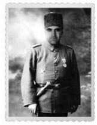

Miralay Şinasi Efendi
Şinasi Havuz. Şino, benim Bursa’dan ev arkadaşım. Oturduğunda bir kilo hamsiyi bana mısın demeden yiyen, dost, delikanlı bir adamdır. Merttir, muziptir, tam bir kankadır. İşin güzel tarafı, kitaptaki rolüyle şu anki rolü aynı. Şinasi, Kuleli Askerî Lisesi’nde Yabancı Diller Bölüm Başkanı. Ben onu, o dönemin miralay kıyafetine yerleştirdim; süper de yakışıklı oldu.
